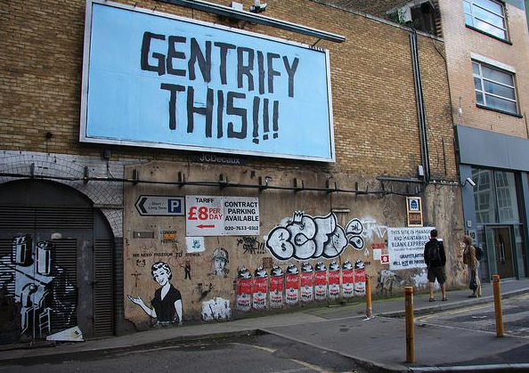
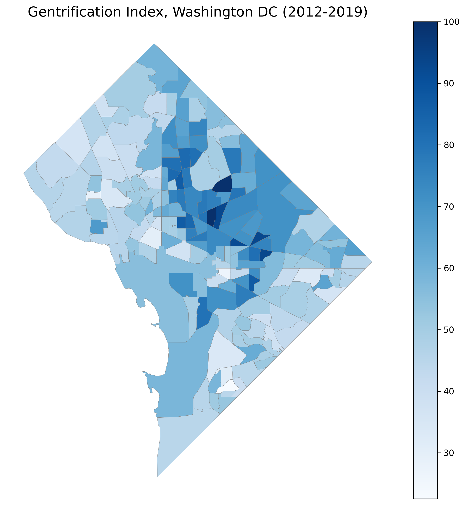
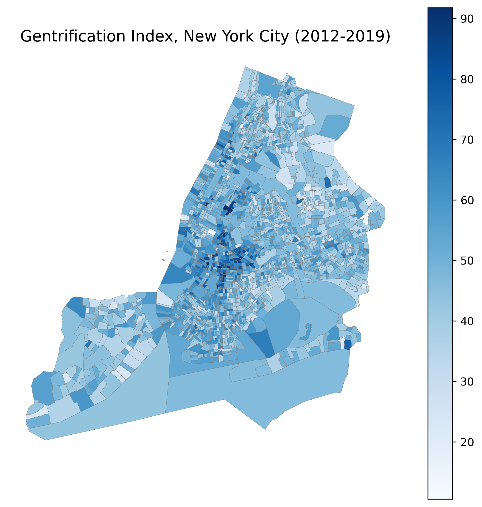
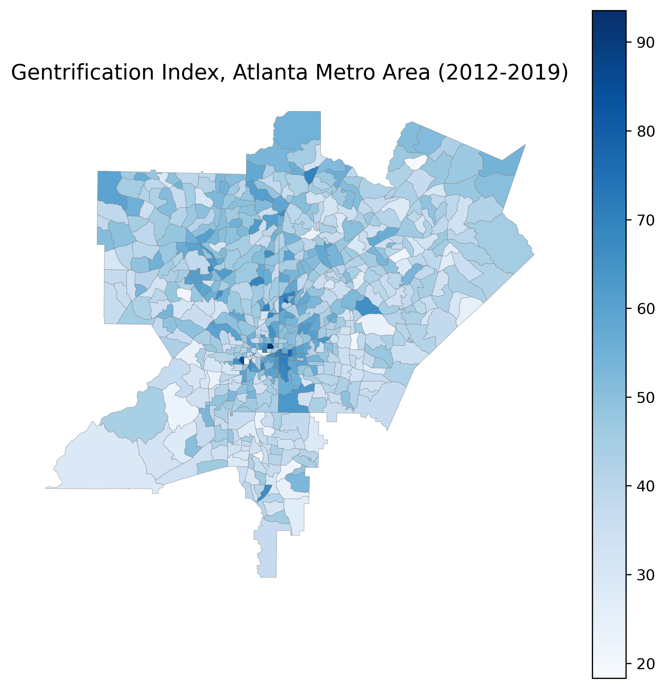
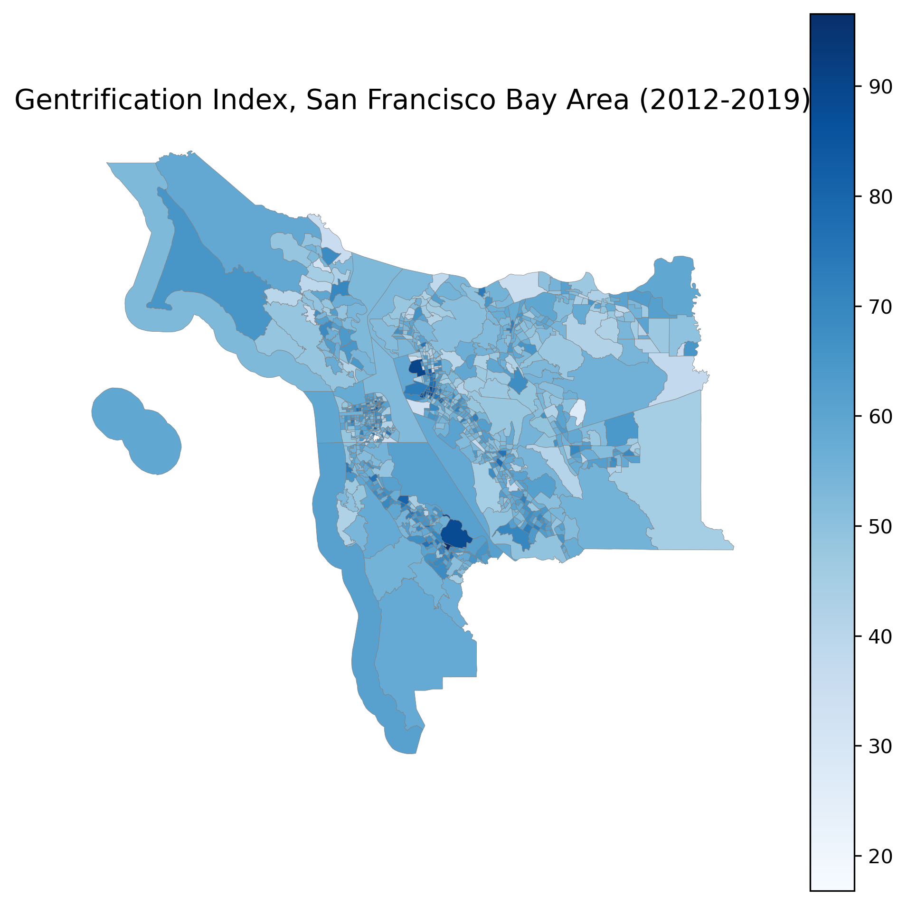

Identifying Gentrification in the United States
Overview
This project is a data-driven exploration of neighborhood change across the United States from 2012 to 2019, with a focus on where and how gentrification is unfolding. Using U.S. Census data and machine learning techniques, we highlight the patterns and socioeconomic factors most closely associated with these changes. We aim to help illuminate broader trends in neighborhood change and support informed conversations about gentrification.

Source: (Dream, 2018)
Introduction
Gentrification is one of the most contentious topics in urban policy, touching questions of racial equity, displacement, cultural transformation, and neighborhood investment. Yet despite decades of research, there is still no single agreed-upon definition for gentrification, which makes it difficult to compare neighborhoods, cities, and time periods in a systematic way. This project takes a data-driven approach to that challenge by constructing a tract-level index of neighborhood change across the United States between 2012 and 2019.
Using American Community Survey (ACS) 5-year data, we combine changes in income, rent, home values, demographic composition, residential turnover, and housing stock into a single principal component based gentrification index. We then use this index as the outcome for a series of exploratory, unsupervised, and supervised learning tasks. We explore where gentrification is most intense, find which socioeconomic variables best identify it, and compare the performance of a variety of linear and non-linear models.
By offering a clear mesure of neighborhood change, this project provides tools that policymakers can use to identify signs of existing gentrification, allowing them to intervene and support affected communities.




Note: Code for gentrification maps can be found on the Gentrification Index page.
Project Outline
This project is broken down into several pages as follows:
- Report: provides a non-technical summary of our methods, results, and conclusions.
- Technical Details:
- Gentrification Index: Displays the code and methods used to create our gentrification index for the whole country.
- Data-Collection: Displays the data collection for features other than the gentrification index.
- Data-Cleaning: Displays the cleaning and feature selection process for our explanatory variables of interest.
- Exploratory Data Analysis: Explores our selected features with a variety of visual aids.
- Unsupervised Learning: Analyzes selected features using a variety of dimensionality reduction and clustering techniques.
- Supervised Learning: Analyzes selected features with a variety of supervised learning models such as regressions, binary classification, and multi-class classification.
- Progress Log: Summarizes our progress in the project over time.
- LLM Usage Log: Provides a summary of uses of LLMs in the project.
- About Us: Information about the authors.
Goals
- Create a robust gentrification index based on generally agreed upon characteristics in academic literature,
- Explore the socioeconomic variables that most closely relate to the gentrification index,
- Explore statistical and geographic trends in the index and in features that may be related to it,
- Use unsupervised learning models to uncover natural groupings of neighborhoods and explore the broader patterns of socioeconomic change across census tracts,
- Use supervised learning models to predict the gentrification index and evaluate how different modelling approaches capture the complex, nonlinear relationships underlying neighborhood change.
Literature Review
Gentrification has been accelerating over the past 50 years and has become a central issue in urban policy debates in the United States (Mitchell et al., 2025). Yet, despite decades of research, scholars are yet to come to a single, universally accepted definition of what constitutes gentrification. In the 1960s, sociologist Ruth Glass coined the term “gentrification” to describe the migration of a new “gentry” into low-class neighborhoods in London (Glass, 1964). While this baseline still applies to most definitions, over time it has shifted depending on the focus of the discourse, with practitioners and scholars emphasizing different combinations of socioeconomic, demographic, and cultural change. Some view it primarily as a form of socioeconomic upgrading, while others emphasize the physical and cultural displacement that occurs as a result of the heightened investment. These differences can complicate attempts to measure gentrification and its impacts.
One key feature that is often debated is the inclusion of displacement in the definition of gentrification. Early urban theorists argue that gentrification by nature involves the replacement of native residents who are disproportionately low-income, working-class, and ethnic minorities. Ruth Glass, who originally created the term, described the process as moving rapidly “until all or most of the original working-class occupiers are displaced and the whole social character of the district is changed” (Glass, 1964). Despite this, many policymakers at the time viewed gentrification as a positive process that improves neighborhoods with minimal displacement effects. Marcuse (1985) took issue with these views and argued that gentrification inherently displaces lower-income people by increasing pressures on housing and rents, even if no physical evictions are occurring. He also emphasizes that displacement is multidimensional and that when trying to identify it in the context of gentrification, we also have to take into account the disinvestment that may push people out before reinvestment, and the exclusionary effect that increased living costs have on the neighborhood. Marcuse’s emphasis on the multidimensional nature of displacement has also been extended by more recent papers (Marcuse, 1985).
Zuk et al. (2018) see gentrification and displacement as two distinct but closely intertwined processes. They expand on Marcuse’s paper, arguing that displacement can be either forced or responsive and may stem from direct or physical factors (such as eviction, landlord harassment, or building condemnation); indirect or economic causes (such as foreclosure, rent increases, or the loss of social networks); or exclusionary forces (such as unaffordable housing, cultural dissonance, or zoning policies). This broader framework highlights how displacement can emerge even in the absence of formal eviction or immediate resident turnover (Zuk et al., 2018).
Although displacement was central to early conceptions of gentrification, some later empirical definitions focus on socioeconomic upgrading/change in neighborhoods that may not necessarily be linked to displacement (Ding et al., 2016; Freeman, 2005; Freeman & Braconi, 2004; Vigdor, 2002). Freeman (2005) defines gentrifying neighborhoods as “central city neighborhoods populated by low-income households that have previously experienced disinvestment” that then have “an influx of the relatively affluent or gentry, and an increase in investment.” Using longitudinal data from the Panel Study of Income Dynamics and the Decennial Census, Freeman investigates whether gentrification actually displaces low-income residents. His results from a logistic regression model indicate that gentrification does not increase overall mobility or displacement among incumbents (Freeman, 2005). Freeman’s hypothesis was also investigated by Ding et al. (2016), who tracked individuals over time to examine the effect of gentrification in Philadelphia between 2002 and 2014. They consider a tract to be gentrifying if it began as a low-income tract and experienced above-median increases in home values and in the share of college-age residents. Using a linear probability model, they find that although mobility is higher in gentrifying neighborhoods, the effect is small and does not seem to differentiate between low- and high-income residents (Ding et al., 2016).
Despite their findings, a substantial body of research challenges these findings, arguing that traditional mobility-based measures significantly underestimate the scale and complexity of displacement (Atkinson, 2000, 2004; Davidson & Lees, 2009; Newman & Wyly, 2006; Shaw & Hagemans, 2015). Newman & Wyly (2006) directly contest the results from Freeman (2005) and Freeman & Braconi (2004) by re-examining displacement trends in New York City using their same dataset and conducting individual interviews with residents. They find that displacement in New York City is significantly underestimated by these quantitative studies due to short-term data limitations that didn’t account for delayed displacement, chain displacement, or hidden forms of indirect or exclusionary displacement. Newman and Wyly’s interviews revealed that many residents face landlord harassment and persistent rent increases that can push them out slowly over time (Newman & Wyly, 2006).
In addition to understanding the mechanisms and consequences of gentrification, a growing body of work has sought to predict where gentrification is likely to occur (Chapple & Zuk, 2016; Naik et al., 2017; Thackway et al., 2023; Yoo, 2023). Chapple & Zuk (2016) review a variety of common predictors and models used for predicting gentrification. Predictors can include socioeconomic variables, such as income and education, housing market conditions, location and accessibility indicators, demographic change indicators, and investment indicators. They categorize statistical models into three types: 1) linear or logistic regressions; 2) indicator scoring systems and composite indices; 3) typology-based multistage models. Some more recent papers attempt to leverage more complex machine learning models (Chapple & Zuk, 2016). Yoo (2023) creates a gentrification flag and tests six classification models to find the best predictor. They find that a random forest classification model outperforms logistic regression and other more complex models like gradient boosting and k-nearest neighbors (Yoo, 2023). Some other papers explore more unique methods, such as Naik et al. (2017), who use Google Street View to leverage computer vision to identify visual cues of gentrification (Naik et al., 2017).
Gentrification is clearly a complicated topic that requires careful study and, taken together, these papers illustrate the need for more comprehensive measures of gentrification. The literature demonstrates how varying definitions and diverse methodological approaches all contribute to a fragmented understanding. Developing more transparent and consistent metrics is essential for helping researchers and policymakers better interpret neighborhood change and respond effectively to its consequences.